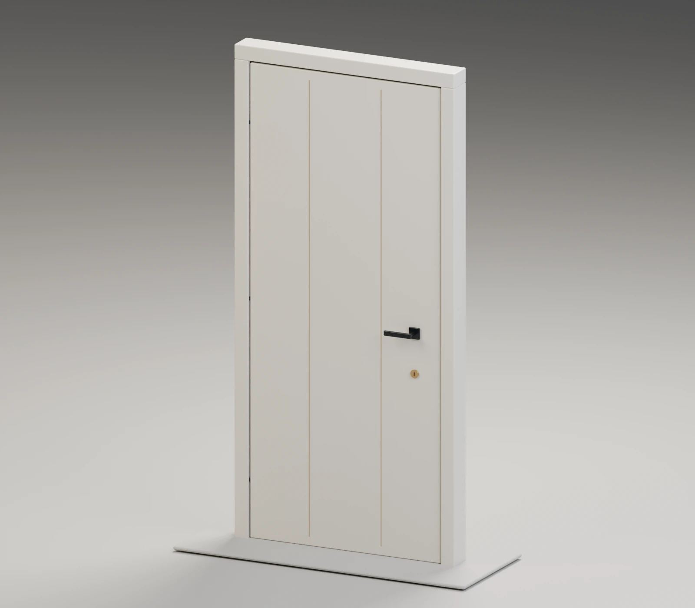
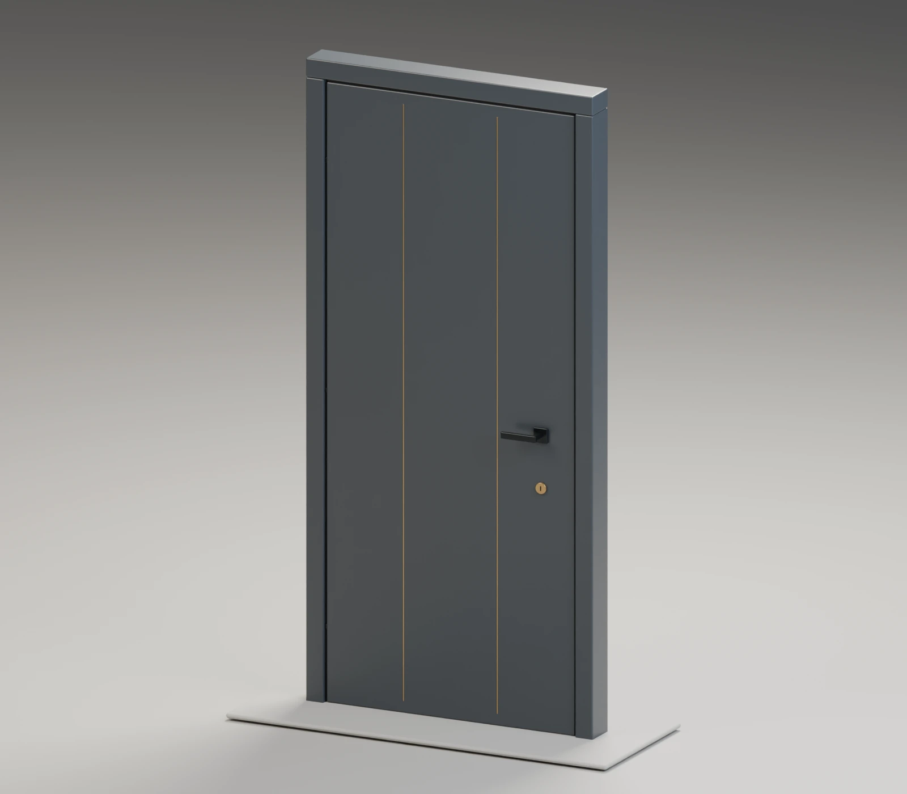

07 / Видео и визуализация
Товар в 3D: рендеры и видео
Собственная демонстрационная модель двери: три варианта покрытия и короткое видео с движением камеры.
Материалы проекта
Изображения можно увеличить ↗

Собственная модель: дубовое покрытие.


Та же геометрия: светлое покрытие.


Та же геометрия: графитовое покрытие.
Реальный рендер: движение камеры вокруг собственной модели, 5 секунд. Без звука.
Разбор проекта
От задачи
к результату.
- Задача
- Показать товар в нескольких материалах и ракурсах без предметной съемки.
- На входе
- Условная модель товара, материалы, свет и камера.
- Что происходит
- Создание собственной геометрии товара и студийной сцены.
- Настройка трех вариантов материалов: дуб, светлое и графитовое покрытия.
- Рендер статичных изображений.
- Анимация камеры и сборка короткого MP4.
- На выходе
- Три изображения и реальный пятиисекундный видеорендер собственной модели.
Процесс в четырех шагах
- 01
Модель
- 02
Материалы и свет
- 03
Рендер
- 04
Изображения и MP4
Хотите разобрать похожую задачу?
Как начать